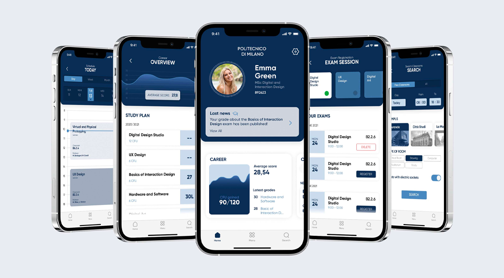
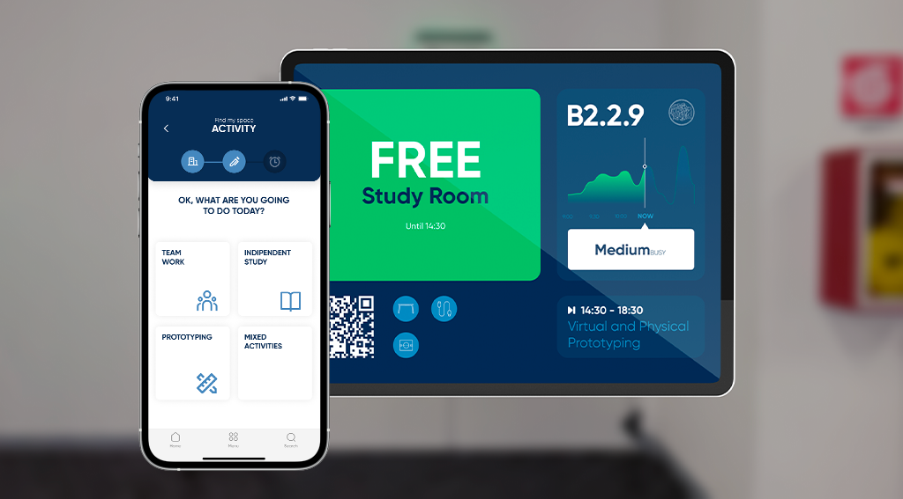
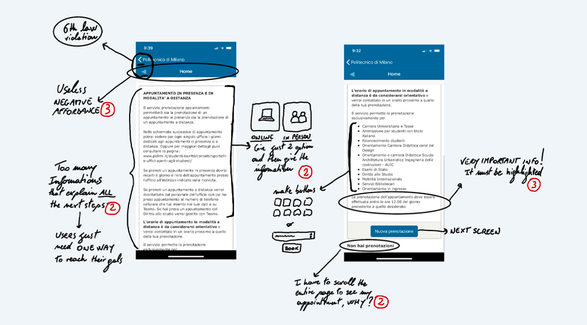
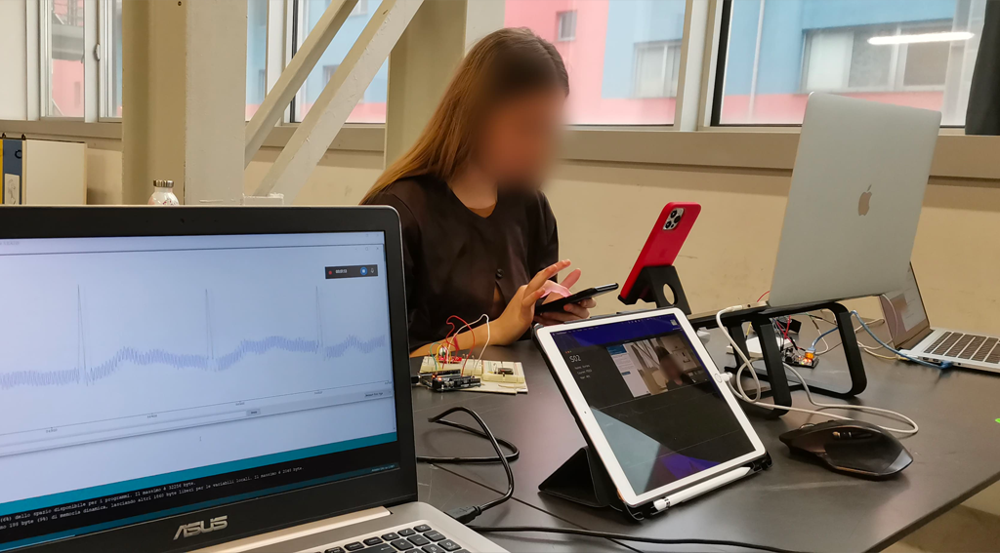
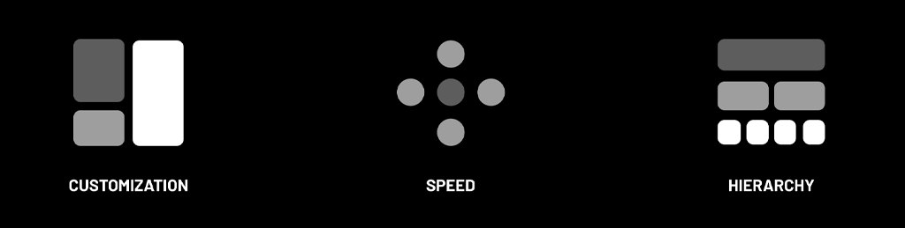
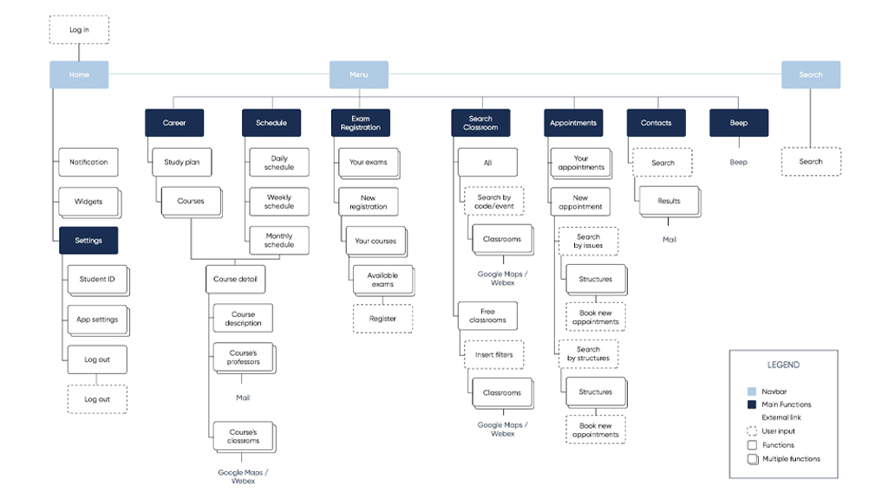
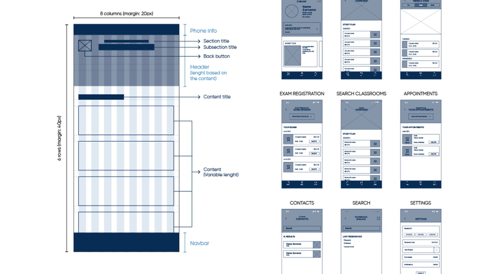

How to improve the everyday lives of students at Politecnico di Milano?
The university where I studied, Politecnico di Milano, has an application that gives students the ability to manage and perform various functions. Unfortunately, the app is unintuitive and difficult to use.
After analysing the current app and testing the students, we realised that students have great difficulty in finding suitable classrooms on a daily basis. For this reason we decided to analyse this problem as well and we are very satisfied with the result.


1. Expert evaluation
The first phase was the Expert Evaluation, which aimed to define the main usability issues related to the architecture or to the UI.
Using the Heuristic evaluation strategy, we found that the flows are intricate and follow a horizontal development, making the user feel lost while navigating the features.
2. User testing
To confirm the Heuristic Evaluation, find new insights and understand user mental models, we decided to conduct a questionnaire and structured interviews.
For the test we have decided to use some tools that could give us some more insights, like the ECG and a custom developed software able to understand the user’s emotions through his facial micro-movements.


3. Define the concept
The redesign phase started with the concept definition according to the outcomes of the analysis and the requirements of the users.
We based our UX concept on three main pillars:
Customization
Speed
Hierarchy
4. Define and test the app architecture
Through several preliminary tests (Card sorting and Tree testing) we have defined our App Architecture, so we could realize a wireframe that we have improved thanks to other tests on users.



5. Define the UI
Now we just need to define the UI: after a few iterations, we arrived at the final solution. It reflects the university's institutional identity but using a fresher and more modern aesthetic.
After defining the UI of the app it was easy for us to define the various elements of Animus, to learn more about this part of the project watch the video above!
6. Prototype it and test it!
We finally have the final result! The UI has been then prototyped in ProtoPie to make it feel as real as possible with animated interaction and functioning variables.
We tested it with our users and they shared with us amazing comments. They were pleased by the fresh look and the intuitiveness of it! Try it here yourself and let me know what you think!
Other projects
Easydream
A new way to inspire people to choose their next travel destination
User research -
UX-UI design -
Prototyping
PoliMi app redesign + Animus
A new smart way of managing university rooms
User research -
UI-UX design -
User testing -
Prototyping
Deposito Cinerario Italiano
Communicative machine speculating on death
Digital interaction -
UI / UX -
Web programming -
Space design
Izi photo mosaic
Common digital space that invites users to collaborate